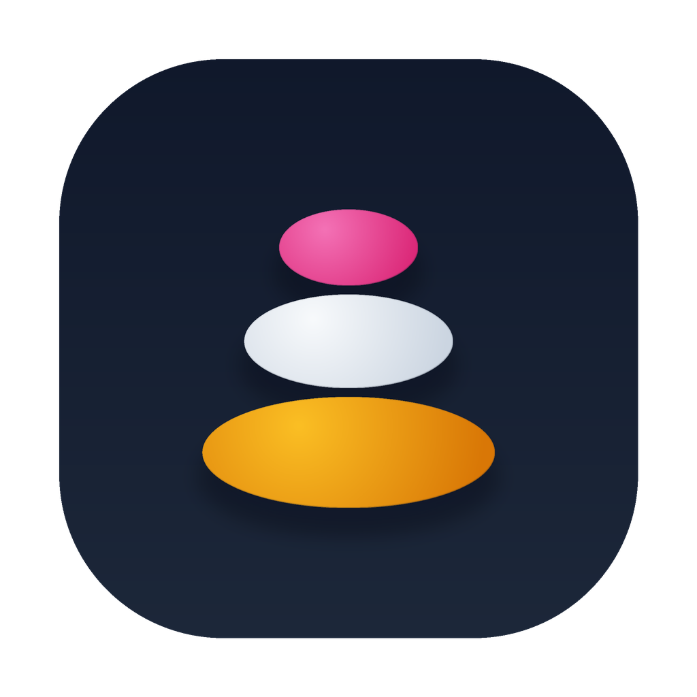

A light markdown editor for macOS
Apple Silicon · version 0.1.0 · ~6 MB
Pebble is a small, fast editor built for people who edit a lot of markdown on a small screen. Edit in place with no clutter of raw syntax, or flip to source and split preview whenever you want.
See formatted text as you type, no raw symbols getting in the way.
Open and edit several files at once in one tidy window.
Switch between WYSIWYG, raw source, and split preview instantly.
Jump around long documents with a heading sidebar.
Quickly search and swap text across your document.
Edit YAML frontmatter in its own box, kept out of your prose.
Syntax highlighting, Mermaid diagrams, and task lists.
Save to HTML or print and export to PDF.
Autosaves as you go and reopens your tabs next time.
Use the mode that fits the moment. Your text stays the same underneath.
Pebble is free and open source. It is not signed with a paid Apple certificate, so macOS asks you to confirm the first launch.
If macOS says Pebble is “damaged”
macOS quarantines apps downloaded from the internet. Clear the flag once in Terminal, then open normally:
xattr -dr com.apple.quarantine /Applications/Pebble.app